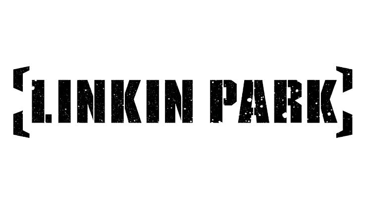

Músicas
Aqui está alguns exemplos das músicas mais populares da banda
| In The End |
Numb |
What i've Done |
| Hybrid Theory |
Meteora |
Minutes to Midnight |
| 2001 |
2003 |
2007 |
A discografia da banda norte-americana, consiste de sete álbuns de estúdio, três álbuns ao vivo, vinte e cinco extended plays (EPs), trinta e nove singles, doze álbuns de vídeo, cinquenta e seis videos musicais e várias outras aparições.
Linkin Park chegou à fama internacional em 2000 quando lançaram o álbum Hybrid Theory.
A banda conseguiu que seis de seus trabalhos chegassem ao topo das paradas da Billboard 200
(Meteora, Collision Course, Minutes to Midnight, A Thousand Suns, Living Things e One More Light)
e onze singles ficaram em nº 1 na parada Alternative Songs ("In the End", "Somewhere I Belong", "Faint", "Numb", "Lying from You", "Breaking the Habit", "What I've Done", "New Divide", "The Catalyst", "Waiting for the End" e "Burn It Down").
Eles também lançaram vários hits, como as canções "One Step Closer", "Crawling", "Numb/Encore", "Bleed It Out", "Shadow of the Day", "Leave Out All the Rest" e com as suas participações nas músicas "It's Goin' Down", do X-Ecutioners, e "We Made It", do rapper Busta Rhymes.
Até 2017, os álbuns de estúdio da banda já haviam vendido mais de 70 milhões de cópias pelo mundo, além de 30 milhões de singles vendidos também